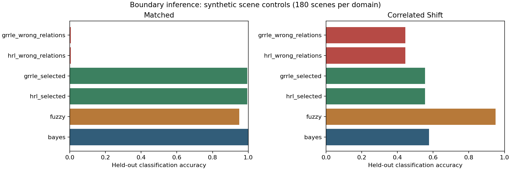

Michael Emanuel Glover’s systems-of-systems framework now connects the existing Eye traces to his actual HRL and GRRLE engines. Bayesian reasoning is one evidence model; fuzzy predicates and recursive compatibility retain their own meanings.
Physical observations → evidence with provenance → competing interpretations ↔ contextual support → explicit integration policy → decisions
| Quantity | Question |
|---|---|
| Bayesian probability | How uncertain is this hypothesis under the specified observation model? |
| Fuzzy membership | To what degree does this observation satisfy a predicate? |
| Relaxed strength | How much support survives the chosen compatibility rules? |
Training, validation, and two test groups each contain 180 independent synthetic scenes. Validation selects coupling; test labels do not. Shared retinal activation challenges the model’s observation assumptions. Inverted compatibility tests whether a coherent field can support the wrong interpretation.

Bayes reaches 100% on the matched test and 57.8% under the chosen disturbance. The fixed fuzzy rule reaches 95% in both. Selected HRL and GRRLE reach 99.4% and 55.6%. Their small selected gains leave every score within the explicit abstention margin: high assignment accuracy does not establish usable confidence. These results describe this generator.
The measured IMPase calibration retains its assay conditions and held-out predictions. The 75 sensory windows come from our mechanistic Eye simulation and have no measured target labels. Missing interoception stays missing. No photon-source audit flag enters inference. Interpretation does not alter physiology or Will.
const auto evidence = alex.boundary_evidence(
{10, 10, 1000}, "retina-and-body:window-1");This const operation returns an owned observation, provenance, Bayesian estimate, and nonexclusive fuzzy memberships. The Body continues to own its organs and cells by value.
Equations, results, and scientific notes · Gradual C++ lesson · Full results · Held-out predictions · Eye-window interpretations · Exact engine provenance · Source download
Originating framework and direction: Michael Emanuel Glover. Assistant: implementation, experiments, verification, and exposition. Ten C++ suites and eleven Python checks pass. In remembrance of James Calvin Glover.